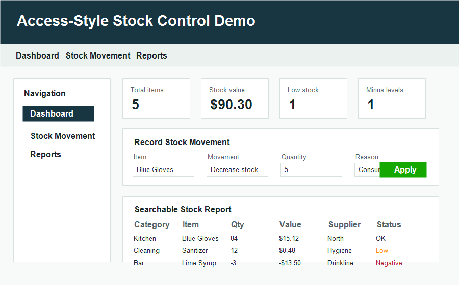

Inventory CSV Cleanup
Normalize stock lists, supplier files, product exports, missing fields, and review-ready reports.
A focused first milestone for teams that manage stock lists, product exports, supplier CSVs, or manual inventory reports.

$250-$300 fixed scope
The goal is not to build a full warehouse platform on day one. The goal is to turn one real inventory workflow into a working sample that can be reviewed and expanded.
Normalize stock lists, supplier files, product exports, missing fields, and review-ready reports.
Track stock-in, stock-out, reason fields, negative stock, stock value, and searchable summaries.
Validate a first workflow before building a full ecommerce, MYOB, Access, Zoho, or warehouse system.
Single-user inventory interface mockup with stock movement entry, searchable reports, stock value, and minus-level visibility.
Python workflow that reads inventory and transaction CSVs, applies stock changes, and exports a clean stock report.
A good first milestone is one input file, one workflow, and one report. After that is approved, the next milestone can add user roles, ecommerce sync, MYOB/Zoho integration, dashboards, or a larger database.
I do not need sensitive production data to estimate the first step. A sanitized sample with fake rows is enough.